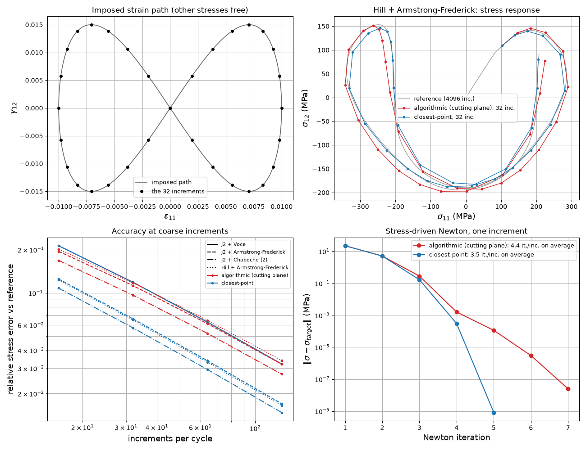

Note
Go to the end to download the full example code.
Closest-Point Projection — Non-Proportional Loading
tangent_mode=3 replaces the cutting-plane local loop of the MODUL UMAT by a
closest-point projection: the plastic strain uses the flow direction of the converged
state, and the consistent tangent is the exact Jacobian of the discrete update for every
criterion with a flow Hessian and every hardening law. The cutting-plane loop (modes 1 and
2) accumulates the plastic strain along the direction of each Newton iterate; the two
integrators coincide only when that direction does not rotate within the increment — von
Mises with isotropic hardening (radial return).
Under a non-proportional path the direction rotates in every increment. The loading here is a figure-eight in the (axial strain, shear strain) plane, \(\varepsilon_{11} = a \sin t\), \(\gamma_{12} = b \sin 2t\), the other four stress components free, applied to a ladder of models of growing complexity: J2 + Voce (radial), J2 + Armstrong–Frederick, J2 + two-term Chaboche, Hill + Armstrong–Frederick.
Three things are measured, mode 2 against mode 3, and printed as a table:
the error of the coarse-increment response against a fine reference — both integrators are first order in the increment; where the flow direction rotates, the closest-point one has the smaller constant;
the convergence of a global Newton iteration driven by each tangent — the same figure-eight prescribed in stress, solved with a Python Newton over
simcoon.umat()— linear with the mode-2 operator, quadratic with the exact mode-3 one;the cost per increment through the solver: the closest-point branch solves state and stress together, which is the price of the exactness. In a finite-element run the global linear solves dominate, and their number is the Newton iteration count of 2.
import time
import matplotlib.pyplot as plt
from matplotlib.lines import Line2D
import numpy as np
import simcoon as sim
from simcoon.solver import StepMeca, solve
from simcoon.modular import (
ModularMaterial,
IsotropicElasticity,
Plasticity,
VonMisesYield,
HillYield,
VoceHardening,
LinearIsotropicHardening,
ArmstrongFrederickHardening,
ChabocheHardening,
)
plt.rcParams["figure.figsize"] = (13, 10)
1. The ladder of models
Same elastic block and initial yield stress everywhere; only the flow direction’s behaviour within an increment changes: fixed (radial return) for J2 + isotropic hardening, rotating with the backstress for kinematic hardening, rotating with the anisotropic criterion for Hill.
E, nu, sigma_Y = 70000.0, 0.3, 200.0
def material(plasticity):
return ModularMaterial(elasticity=IsotropicElasticity(C1=E, C2=nu), mechanisms=[plasticity])
MATERIALS = {
"J2 + Voce": material(Plasticity(
sigma_Y=sigma_Y, yield_criterion=VonMisesYield(),
isotropic_hardening=VoceHardening(Q=100.0, b=20.0))),
"J2 + Armstrong-Frederick": material(Plasticity(
sigma_Y=sigma_Y, yield_criterion=VonMisesYield(),
isotropic_hardening=LinearIsotropicHardening(H=500.0),
kinematic_hardening=ArmstrongFrederickHardening(C=30000.0, D=150.0))),
"J2 + Chaboche (2)": material(Plasticity(
sigma_Y=sigma_Y, yield_criterion=VonMisesYield(),
isotropic_hardening=VoceHardening(Q=100.0, b=20.0),
kinematic_hardening=ChabocheHardening(terms=((30000.0, 150.0), (5000.0, 10.0))))),
"Hill + Armstrong-Frederick": material(Plasticity(
sigma_Y=sigma_Y, yield_criterion=HillYield(F=0.5, G=0.7, H=0.4, L=1.6, M=1.3, N=1.8),
isotropic_hardening=LinearIsotropicHardening(H=500.0),
kinematic_hardening=ArmstrongFrederickHardening(C=30000.0, D=150.0))),
}
MODES = {2: ("algorithmic (cutting plane)", "tab:red"), 3: ("closest-point", "tab:blue")}
2. The figure-eight in strain space
A tabular step: one row per increment, columns [time, eps11, gamma12]; the four other components are stress-free (“zero”).
a, b = 0.01, 0.015
def figure_eight(n_inc):
t = np.linspace(0.0, 2.0 * np.pi, n_inc + 1)[1:]
return np.column_stack([t, a * np.sin(t), b * np.sin(2.0 * t)])
def run(mat, n_inc, mode):
step = StepMeca(control=["strain", "zero", "zero", "strain", "zero", "zero"],
mode="tabular", tabular=figure_eight(n_inc))
t0 = time.perf_counter()
res = solve(step, "MODUL", mat.props, mat.nstatev, T_init=293.0, tangent_mode=mode)
return res, (time.perf_counter() - t0) / n_inc
3. Accuracy at coarse increments
The reference is a run with N_FINE increments (a multiple of every coarse count, so the coarse times are exact subsets of its times); the two integrators agree there, and their residual gap is printed. The error is measured on the (sigma11, sigma12) components.
N_FINE, N_COARSE, N_SHOW = 4096, (16, 32, 64, 128), 32
errors = {name: {mode: [] for mode in MODES} for name in MATERIALS}
cost = {name: {} for name in MATERIALS}
responses = {name: {} for name in MATERIALS}
fine_gap = {}
for name, mat in MATERIALS.items():
fine = {mode: run(mat, N_FINE, mode)[0]["Stress"][[0, 3]] for mode in MODES}
s_ref = fine[3]
responses[name]["ref"] = s_ref
fine_gap[name] = np.linalg.norm(fine[2] - fine[3]) / np.linalg.norm(s_ref)
for n in N_COARSE:
idx = np.arange(1, n + 1) * (N_FINE // n) - 1
for mode in MODES:
res, per_inc = run(mat, n, mode)
s = res["Stress"][[0, 3]]
errors[name][mode].append(np.linalg.norm(s - s_ref[:, idx]) / np.linalg.norm(s_ref[:, idx]))
if n == N_SHOW:
responses[name][mode] = s
if n == N_COARSE[-1]:
cost[name][mode] = per_inc
4. Global Newton convergence under stress control
The figure-eight prescribed in stress (sigma11 = A sin t, sigma12 = B sin 2t, the rest zero) and solved increment by increment with a Newton iteration on the strain increment, using the tangent each mode returns. This is what an implicit finite-element solver does at every Gauss point: the number of iterations is the number of global linear solves. The amplitudes keep the equivalent stress clear of the Voce saturation (sigma_Y + Q), where a stress-driven Newton is ill-posed whatever the tangent (hardening slope -> 0).
A_SIG, B_SIG, N_NEWTON, TOL = 230.0, 85.0, 48, 1.0e-8 * sigma_Y # TOL above the local tolerance
def umat_point(mat, eps, De, sig, sv, Wm, mode):
"""One material point through sim.umat, whose arguments are (6, N) column batches of
Gauss points, at the temperature of section 3; start=False keeps the reference
temperature and the works of the running simulation."""
col = lambda v: np.asfortranarray(np.asarray(v, dtype=float).reshape(-1, 1))
I3 = np.eye(3).reshape(3, 3, 1).copy(order="F")
s, sv_new, Wm_new, Lt = sim.umat("MODUL", col(eps), col(De), I3, I3, col(sig), I3,
col(mat.props), col(sv), 1.0, 1.0, col(Wm),
temp=np.full(1, 293.0), n_threads=1, tangent_mode=mode,
start=False)
return s[:, 0], sv_new[:, 0], Wm_new[:, 0], Lt[:, :, 0]
def stress_driven_newton(mat, mode):
t = np.linspace(0.0, 2.0 * np.pi, N_NEWTON + 1)[1:]
targets = np.zeros((N_NEWTON, 6))
targets[:, 0], targets[:, 3] = A_SIG * np.sin(t), B_SIG * np.sin(2.0 * t)
eps, sig = np.zeros(6), np.zeros(6)
sv, Wm = np.r_[293.0, np.zeros(mat.nstatev - 1)], np.zeros(4)
iterations, histories = [], []
for target in targets:
De, history = np.zeros(6), []
for it in range(50):
try:
s, sv_new, Wm_new, Lt = umat_point(mat, eps, De, sig, sv, Wm, mode)
except sim.StepCut: # a trial too far for the local solve: shorten it, as a solver would
De = 0.5 * De
continue
residual = s - target
history.append(np.linalg.norm(residual))
if history[-1] < TOL:
break
De = De - np.linalg.solve(Lt, residual)
iterations.append(it + 1)
histories.append(history)
eps, sig, sv, Wm = eps + De, s, sv_new, Wm_new
return np.array(iterations), histories
newton = {name: {mode: stress_driven_newton(mat, mode) for mode in MODES}
for name, mat in MATERIALS.items()}
print(f"{'model':28s} {'mode':4s} {'err @%d inc' % N_SHOW:>12s} {'Newton it. mean/max':>20s} "
f"{'us/inc @%d' % N_COARSE[-1]:>12s} fine-run gap")
for name in MATERIALS:
for mode in MODES:
it = newton[name][mode][0]
print(f"{name:28s} {mode:<4d} {errors[name][mode][N_COARSE.index(N_SHOW)]:12.2e} "
f"{it.mean():11.2f} / {it.max():<6d} {cost[name][mode] * 1e6:12.1f} "
+ (f"{fine_gap[name]:.1e}" if mode == 2 else ""))
model mode err @32 inc Newton it. mean/max us/inc @128 fine-run gap
J2 + Voce 2 1.19e-01 2.23 / 5 30.1 3.4e-14
J2 + Voce 3 1.19e-01 2.23 / 5 51.8
J2 + Armstrong-Frederick 2 1.13e-01 3.58 / 7 44.5 6.8e-04
J2 + Armstrong-Frederick 3 6.61e-02 3.29 / 5 75.2
J2 + Chaboche (2) 2 9.66e-02 3.29 / 6 47.1 5.5e-04
J2 + Chaboche (2) 3 5.72e-02 3.21 / 5 70.7
Hill + Armstrong-Frederick 2 1.18e-01 4.35 / 8 69.7 7.9e-04
Hill + Armstrong-Frederick 3 6.47e-02 3.54 / 5 101.4
5. Plots
Top left: the imposed strain path (the figure-eight, with the N_SHOW increments marked). Top right: the stress response of Hill + AF to it at N_SHOW increments per cycle, against the reference. Bottom left: error vs number of increments for the ladder (line style = model, colour = mode). Bottom right: residual history of one stress-driven Newton increment for Hill + AF.
show = "Hill + Armstrong-Frederick"
fig = plt.figure()
plt.subplot(2, 2, 1)
plt.grid(True)
path_fine, path_show = figure_eight(N_FINE), figure_eight(N_SHOW)
plt.plot(path_fine[:, 1], path_fine[:, 2], c="0.4", lw=1.2, label="imposed path")
plt.plot(path_show[:, 1], path_show[:, 2], "o", c="k", ms=4, label=f"the {N_SHOW} increments")
plt.xlabel(r"$\varepsilon_{11}$", size=13)
plt.ylabel(r"$\gamma_{12}$", size=13)
plt.title("Imposed strain path (other stresses free)", size=12)
plt.legend(loc="best", fontsize=9)
plt.subplot(2, 2, 2)
plt.grid(True)
plt.plot(*responses[show]["ref"], c="0.6", lw=1.0, label=f"reference ({N_FINE} inc.)")
for mode, (label, color) in MODES.items():
plt.plot(*responses[show][mode], "o-", c=color, lw=1.0, ms=3, label=f"{label}, {N_SHOW} inc.")
plt.xlabel(r"$\sigma_{11}$ (MPa)", size=13)
plt.ylabel(r"$\sigma_{12}$ (MPa)", size=13)
plt.title(f"{show}: stress response", size=12)
plt.legend(loc="best", fontsize=9)
plt.subplot(2, 2, 3)
plt.grid(True, which="both")
styles = ["-", "--", "-.", ":"]
for name, ls in zip(MATERIALS, styles):
for mode, (label, color) in MODES.items():
plt.loglog(N_COARSE, errors[name][mode], ls, c=color, marker="o", ms=3)
handles = [Line2D([], [], c="k", ls=ls, label=name) for name, ls in zip(MATERIALS, styles)]
handles += [Line2D([], [], c=color, ls="-", marker="o", ms=3, label=label) for label, color in MODES.values()]
plt.xlabel("increments per cycle", size=13)
plt.ylabel("relative stress error vs reference", size=13)
plt.title("Accuracy at coarse increments", size=12)
plt.legend(handles=handles, loc="best", fontsize=8)
plt.subplot(2, 2, 4)
plt.grid(True, which="both")
k = N_NEWTON // 4 # one increment on the loading branch
for mode, (label, color) in MODES.items():
it, hist = newton[show][mode]
plt.semilogy(range(1, len(hist[k]) + 1), hist[k], "o-", c=color,
label=f"{label}: {it.mean():.1f} it./inc. on average")
plt.xlabel("Newton iteration", size=13)
plt.ylabel(r"$\|\sigma - \sigma_{target}\|$ (MPa)", size=13)
plt.title("Stress-driven Newton, one increment", size=12)
plt.legend(loc="best", fontsize=9)
plt.tight_layout()
plt.savefig("MODUL_closest_point.png", dpi=120)
plt.show()

Total running time of the script: (0 minutes 2.602 seconds)